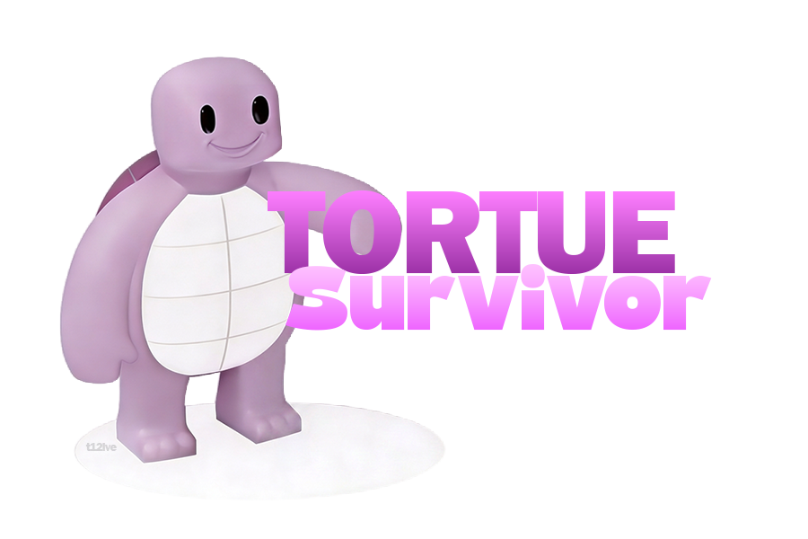
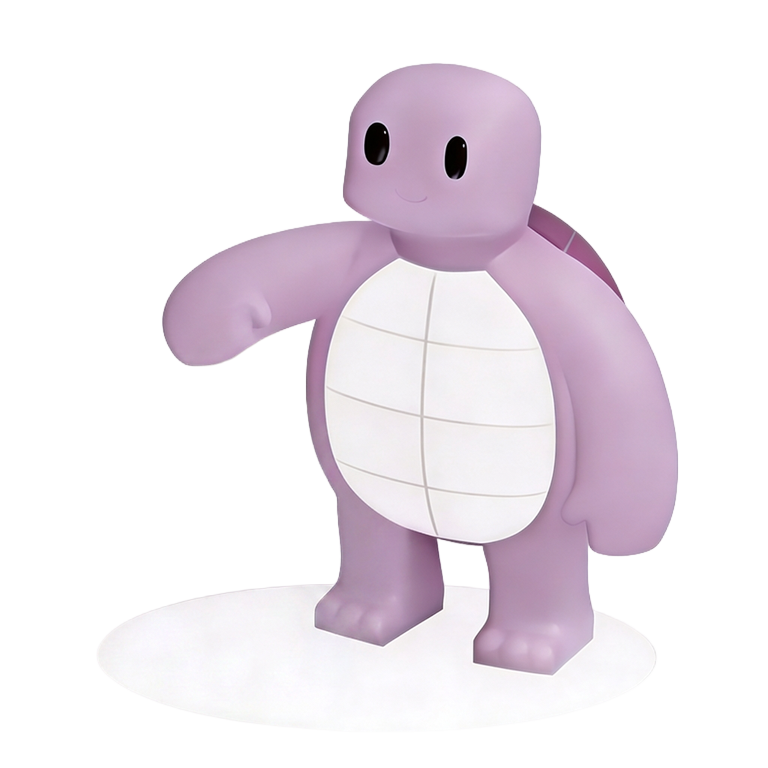

Pitch stream · satire politique · alpha
Vampire Survivors
a quitté le capitalisme
Tu incarnes une tortue. Tu tiens 12 minutes. Tu ne farm pas des cadavres :
tu convaincs journalistes, politiciens et milliardaires.
Win condition : la 6ᵉ République.

Accroche
En une phrase
Survivor-like satirique FR : même loop addictive, morale inversée — convaincre plutôt qu’éliminer.
Pourquoi streamer ça
Avantages pour un live de gauche
-
Angle politique intégré
Les cibles sont immédiatement commentables. Le jeu *est* le bit — pas besoin d’inventer un prétexte.
-
Format stream-friendly
Runs ~12 minutes. Plusieurs builds, fails, réactions chat. Zéro tutoriel interminable.
-
Décalé & clipable
Tortue + conviction + 6ᵉ République = titres absurdes, moments mèmeables.
-
Éthique soft
Pas de pubs, pas de compte, pas de battle pass. Cohérent avec un discours anti-industrie toxique.
-
Zéro friction
Lien navigateur : tu lances en direct, le chat joue aussi s’il veut.
Titres / chat
Phrases décalées
- Aujourd’hui on farm le SMIC et on dash dans les JT
- Speedrun 6ᵉ République (any%)
- Je suis une tortue et je vais convaincre Bernard
- Ce n’est pas un FPS : c’est un CPS (Convaincre Par Seconde)
Message type
DM / mail à envoyer
Salut [Prénom],
Je te pitch Tortue Survivor, un petit survivor-like satirique FR (alpha) : tu joues une tortue, tu tiens 12 minutes, et au lieu de one-shot le monde tu convaincs journalistes, politiciens et milliardaires.
C’est décalé, assumé politiquement, parfait pour un run commenté : builds absurdes (SMIC, ISF climatique…), bosses caricaturaux, OST maison.
Jouer direct (desktop) :
https://t12lve.github.io/tortuesurvivor/
Si ça te parle, un run de 15–20 min + ton regard politique dessus serait déjà ouf. Alpha = retours bienvenus.
Merci !
Deroulé
Structure de stream (20–40 min)
- 0–1 minPitch 30 s + lien dans le chat.
- Run 1Découverte, rire des pouvoirs, laisser le chat nommer les builds.
- Run 2« Build idéologique » — full satire média ou full social.
- FinQ&A : trop soft / trop cash ? CTA follow + retours.
Disclaimer une phrase : « Alpha : ça peut bugger. Satire caricaturale, pas un tract — mais clairement pas neutre. »